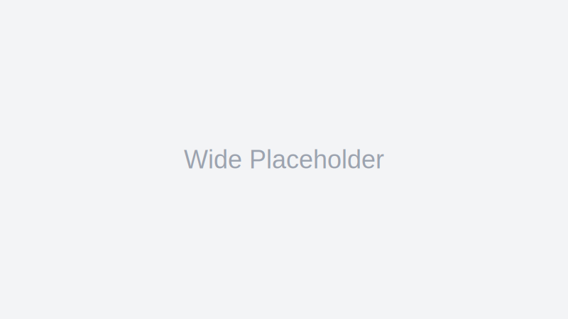

Notion HQ
AI is the new plastic
From kitchens to cars, AI is quietly infusing everyday tools — reshaping craft and workflows in the process.
From kitchens to cars, AI is quietly infusing everyday tools — reshaping craft and workflows in the process.
What changes when every teammate has an assistant that never sleeps?
Tiny scripts, outsized leverage: the quiet economics of developer ergonomics.
How a lightweight structure turns scattered ideas into drafts you can ship.
Lessons from builders who kept their tools sharp and opinions flexible.
Why shipping the first unit is the best way to design the tenth.